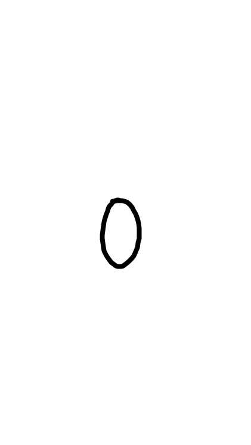
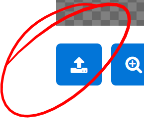
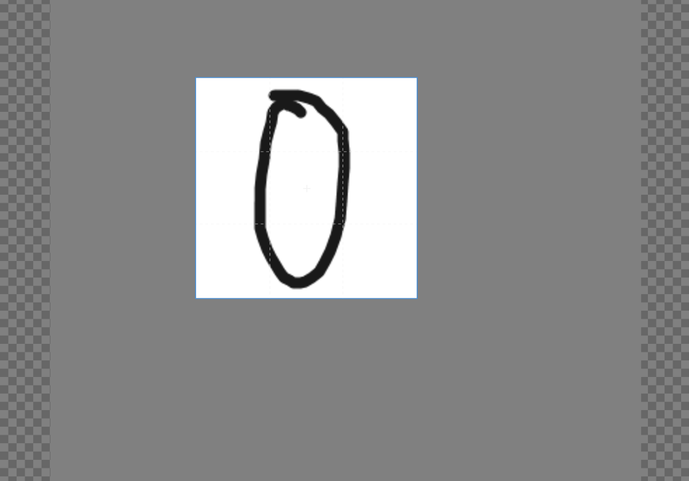
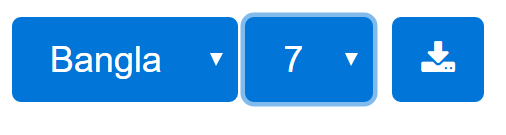

1. Use your mobile phone to draw a digit (using any ordinary Doodle app)

TIPS: Draw a SMALLISH DIGIT on a BIG WHITE SURFACE for best results while cropping
TIPS: Pick a THIKISH BRUSH to doodle :P
2. Take a screen shot
3. Upload it here

4. Crop it to find the best fit (Use zoom in/out etc if needed)

5. Provide language, symbol of the digit, and your roll
i.e: if the digit is Bangla Shat
Pick `Bangla` and `7` to save the file as `B7_roll.jpg`

6. Share your final 20 jpg files in the shared Google Drive Folder